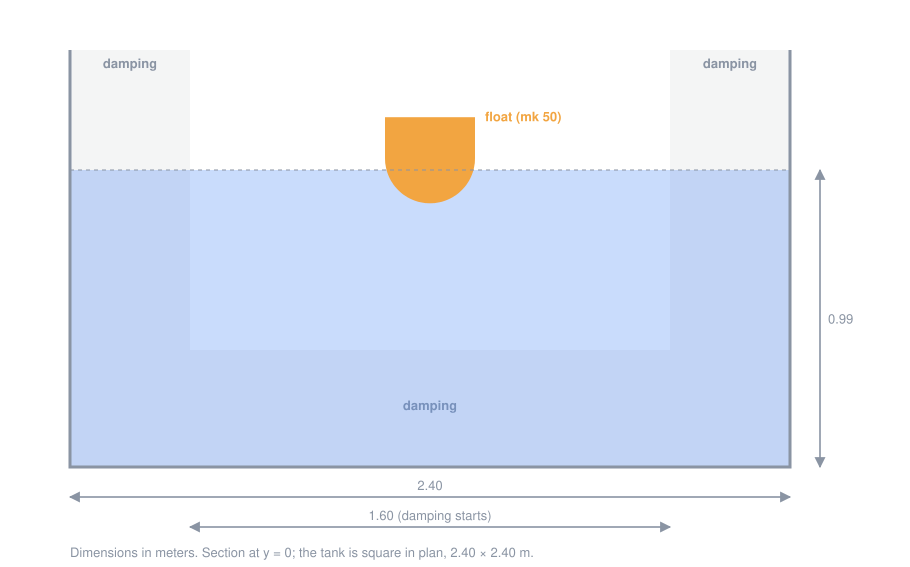
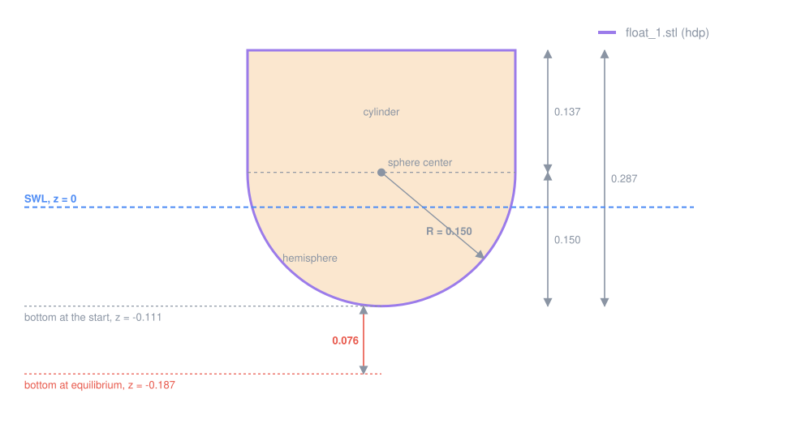
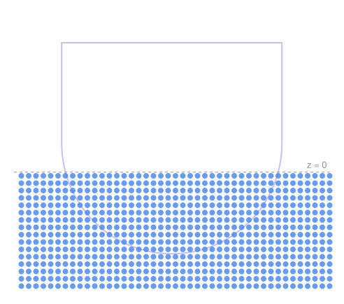
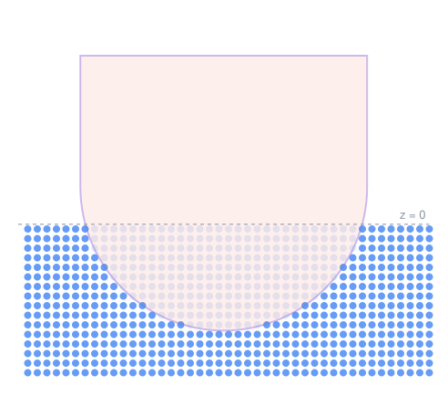
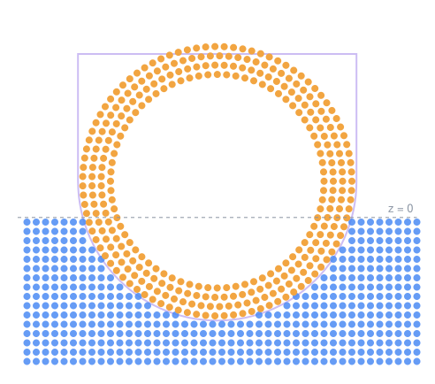
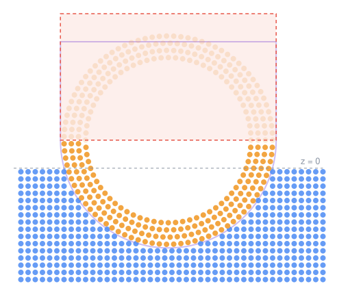
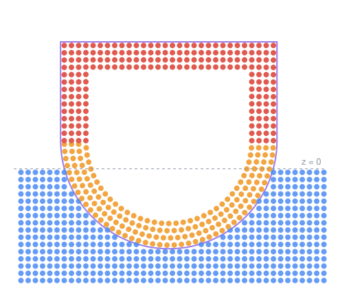
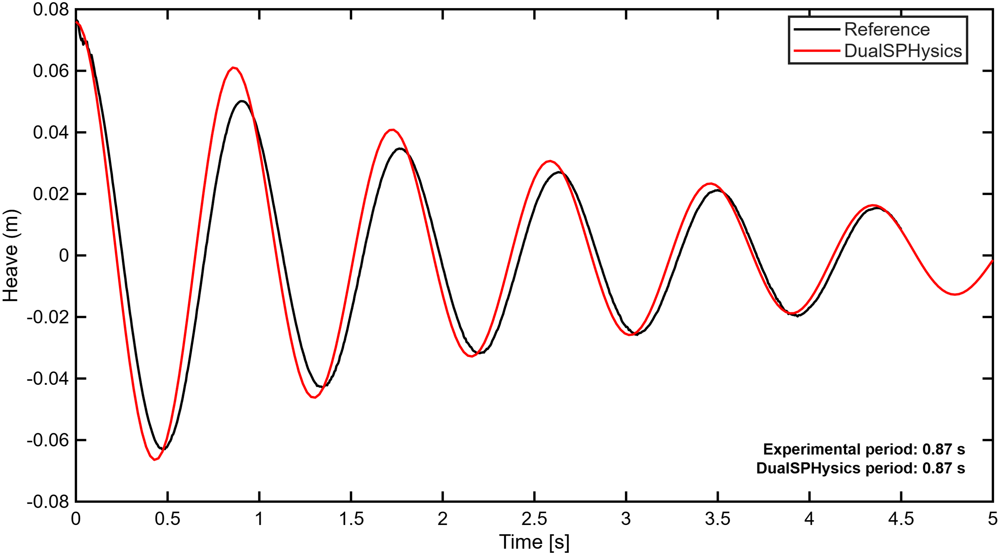

Heave decay¶
Under review by Bonaventura Tagliafierro
This benchmark is a 3-D free decay test. A floating body, a cylinder with a hemispherical base, is released 76 mm above its equilibrium position in still water; it oscillates vertically, and the oscillation decays as the body radiates waves. The vertical motion is compared with the experimental data of SPHERIC Test 14, for Float 1 released from +76 mm.
The case is supplied in examples/benchmarks/08_HeaveDecay. This page explains its configuration in detail, and in particular how the particles of the float are built from simple shapes.
What's Covered in This Tutorial
- A floating body built from primitives: a sphere and a cylinder, drawn in layers with FreeDraw
- Removing fluid and particles with
setmkvoid - An STL of the same body as its wall surface for mDBC
- A floating body restricted to heave
- A damping box that absorbs the radiated waves
Video: To be updated.
Case configuration¶
Physical setup¶

| Element | Dimensions [m] | Position |
|---|---|---|
| Tank | 2.40 × 2.40, open top | centered on \(x=y=0\), floor at \(z=-0.99\) |
| Water depth | 0.99 | still-water level at \(z=0\) |
| Float | radius 0.150, height 0.287, mass 9.75 kg | on the axis \(x=y=0\) |
| Initial offset | 0.076 | bottom at \(z=-0.111\), equilibrium at \(z=-0.187\) |
| Particle spacing | \(Dp = 0.010\) |
The water is labeled mkfluid=0, the tank mkbound=0, and the float mkbound=50.
Physical constants¶
<constantsdef>
<gravity x="0" y="0" z="-9.81" comment="Gravitational acceleration" units_comment="m/s^2" />
<rhop0 value="998.5" comment="Reference density of the fluid" units_comment="kg/m^3" />
<rhopgradient value="3" comment="Initial density gradient 1:Rhop0, 2:Water column, 3:Max. water height (default=2)" />
<hswl value="0" auto="true" comment="Maximum still water level to calculate speedofsound using coefsound" units_comment="metres (m)" />
<gamma value="7" comment="Polytropic constant for water used in the state equation" />
<speedsystem value="0" auto="true" comment="Maximum system speed (by default the dam-break propagation is used)" />
<coefsound value="30" comment="Coefficient to multiply speedsystem" />
<speedsound value="0" auto="true" comment="Speed of sound to use in the simulation (by default speedofsound=coefsound*speedsystem)" />
<coefh value="1.5" comment="Coefficient to calculate the smoothing length (h=coefh*sqrt(3*dp^2) in 3D)" />
<cflnumber value="0.2" comment="Coefficient to multiply dt" />
</constantsdef>
Fluid: water with reference density 998.5 kg/m³. rhopgradient=3 indicates that the water is initialized with a hydrostatic density profile computed from the maximum water height.
Speed of sound: the entries with auto="true" are calculated by GenCase. The still-water level hswl is taken from the water depth, and the system speed is the dam-break velocity taken as \(\sqrt{g\,h_{\mathrm{swl}}}\); the speed of sound is then computed considering the multiplier coefsound = 30.
Smoothing length: in 3D, \(h = \mathrm{coefh}\,\sqrt{3}\,Dp = 1.5\sqrt{3}\times0.010 = 0.026\) m. Each particle interacts with neighbors up to \(2h\) = 5.20·Dp away. This information is used to define the number of boundary layers needed for correct simulations.
Time step: cflnumber=0.2 scales the time step that the solver computes at every step, to account for the Courant condition.
Geometry definition¶
Real dimensions and particle spacing¶
<newvarcte base="0.80" />
<newvarcte height="0.33" />
<newvarcte radius="0.150" _rem="radius"/>
<newvarcte Dp="radius/15" />
<newvarcte Dpm="Dp/2" />
<newvarcte depth="roundpos(3*height,0,Dp)" _rem="Water level (whole number of Dp)" />
<newvarcte expectedPeriod="0.90" />
<newvarcte timeMax="6*expectedPeriod" />
<newvarcte domainDown="-3.0*base" />
<newvarcte domainUp="3.0*base" />
<newvarcte timeOut="expectedPeriod/40"/>
<newvarcte initialDraft="-0.150-0.037+0.07600"/>
<!-- Tank (whole numbers of Dp): real surfaces at the walls, the floor (-depth) and SWL (z=0) -->
<newvarcte TankHalf="roundpos(abs(domainDown)/2,0,Dp)" _rem="Half width of the tank" />
<newvarcte TopZ="roundpos(0.40,0,Dp)" _rem="Top of the walls" />
<!-- Particle grid: nodes at Dp/2 from the real surfaces -->
<newvarcte PminXY="-TankHalf-Dpm-10*Dp" PminZ="-depth-Dpm-10*Dp" />
Particle spacing: Dp is one fifteenth of the radius of the float, 0.010 m.
Tank: the depth, the half width of the tank, and the top of the walls are rounded with roundpos to integer numbers of spacings: 0.99 m, 1.20 m, and 0.40 m. The lattice origin, PminXY and PminZ, is Dp/2 plus ten spacings outside the tank, so the walls, the floor, and the still-water level fall halfway between two nodes.
Initial position: initialDraft is the height of the bottom of the float at the start. At equilibrium, the bottom is at \(z=-0.187\) m (−0.150 − 0.037); the float starts 0.076 m higher, at \(z=-0.111\) m.
The float¶
The float is a cylinder of radius 0.150 m and height 0.137 m, on a hemisphere of the same radius: 0.287 m high in total (Figure 2). It is described twice, with the same dimensions:
- Wall surface: the STL file
float_1.stl, used to compute the mDBC normals. - Particles: a sphere and a cylinder drawn with FreeDraw, in layers inside their surfaces.

The wall surface¶
<!-- floater -->
<setmkbound mk="50" />
<drawfilestl file="float_1.stl" >
<drawscale x="#scale" y="#scale" z="#scale" />
<drawrotate angx="0" angy="0" angz="0" />
<drawmove x="#0" y="0" z="#initialDraft" />
<depth depthmin="#0*Dp" />
</drawfilestl>
STL: float_1.stl contains the whole float, with its bottom at \(z=0\) and its axis on \(x=y=0\); drawmove lowers it to initialDraft. Its faces are the real faces of the float, drawn in GeometryForNormals together with the tank, and saved as HeaveDecay_hdp_Actual.vtk for the mDBC normals.
The particles, step by step¶
The particles of the float are built in mainlist with five commands, after the water. The figures show the section at \(y=0\), through the axis of the float, with the STL outline for reference.
Step 1: the water¶
<setmkfluid mk="0" />
<fillbox x="#Dpm+40*Dp" y="#Dpm" z="#-depth+Dpm+5*Dp">
<modefill>void</modefill>
<point x="#-TankHalf" y="#-TankHalf" z="#-depth" />
<size x="#2*TankHalf" y="#2*TankHalf" z="#depth" />
</fillbox>
fillbox fills the tank with water from the floor to the still-water level, on the lattice of the case, including the region where the float is (Figure 3).

Step 2: removing the water inside the float¶
<setmkvoid />
<drawsphere radius="#radius">
<point x="0" y="0" z="#initialDraft+0.150" />
</drawsphere>
<drawcylinder radius="#radius">
<point x="0" y="0" z="#initialDraft+0.150" />
<point x="0" y="0" z="#initialDraft+0.150+0.1370" />
</drawcylinder>
setmkvoid makes the next drawings empty the nodes they cover. The sphere, centered 0.150 m above the bottom of the float, and the cylinder on top of it cover the whole float, so the water inside it is removed (Figure 4).
The remaining water is on the lattice of the case, so its distance from the curved surface of the float varies between 0 and Dp.

Step 3: the sphere in layers¶
<setmkbound mk="50" />
<setfrdrawmode auto="true" />
<drawsphere radius="#radius">
<point x="0" y="0" z="#initialDraft+0.150" />
<layers vdp="-0.5,-1.5,-2.5,-3.5" />
</drawsphere>
Layers inside the surface: with layers vdp="-0.5,-1.5,-2.5,-3.5", the sphere is drawn as four shells, at Dp/2, 1.5·Dp, 2.5·Dp, and 3.5·Dp inside its surface. The first shell is therefore Dp/2 inside the wall surface of the STL, like the first boundary layer of a wall.
FreeDraw: setfrdrawmode auto="true" places the particles along each shell, about one spacing apart, instead of on the lattice of the case; a sphere cannot follow the lattice. The whole sphere is drawn (Figure 5).

Step 4: removing the upper half of the sphere¶
<setmkvoid /> <!-- to remove half sphere -->
<drawcylinder radius="#radius" mask="0">
<point x="0" y="0" z="#initialDraft+0.150" />
<point x="0" y="0" z="#initialDraft+1.00" />
</drawcylinder>
A void cylinder from the center of the sphere upwards removes the particles of the upper half of the shells, which lie inside the cylinder part of the float (Figure 6). Only the hemisphere remains.

Step 5: the cylinder in layers¶
<setmkbound mk="50" />
<drawcylinder radius="#radius" mask="1">
<point x="0" y="0" z="#initialDraft+0.150" />
<point x="0" y="0" z="#initialDraft+0.150+0.1370" />
<layers vdp="-0.5,-1.5,-2.5,-3.5" />
</drawcylinder>
Cylinder: the cylinder is drawn from the center of the sphere to the top of the float, in four layers inside its surface, like the sphere, and still with FreeDraw. mask="1" leaves out its bottom face, which would otherwise be a disk of particles across the inside of the float, at the joint with the hemisphere.
The result: the float is a closed shell of particles, four layers thick, Dp/2 inside the STL everywhere: the hemisphere below, and the side and the top of the cylinder above (Figure 7). Its inside is empty.

The tank¶
<setmkbound mk="0" />
<setfrdrawmode auto="false" />
<drawbox>
<boxfill>bottom | left | right | front | back</boxfill>
<point x="#-TankHalf-Dpm" y="#-TankHalf-Dpm" z="#-depth-Dpm" />
<endpoint x="#TankHalf+Dpm" y="#TankHalf+Dpm" z="#TopZ-Dpm" />
<layers vdp="0*,1,2,3,4" />
</drawbox>
Tank: the box passes through the first boundary layer, Dp/2 outside the walls and the floor, and layers vdp="0*,1,2,3,4" adds five layers outwards. Its wall surface is drawn in GeometryForNormals through the real walls (all^top), with the normals pointing into the tank.
Boundary normals¶
<normals>
<distanceh value="2.0" comment="Maximum distance (H*distanceh) to compute normals data (default=2)" />
<geometryfile file="[CaseName]_hdp_Actual.vtk" comment="File with boundary geometry (VTK format). Use NONE to ignore it." />
</normals>
GenCase reads HeaveDecay_hdp_Actual.vtk, with the tank and the STL of the float, and computes a normal for every boundary particle up to \(2h\) from the surfaces. See the mDBC guide for how the normals are defined.
Checking the generated case¶
GenCase writes the initial state to HeaveDecay_out/ before the simulation starts. Open these files in ParaView to check the case:
HeaveDecay_Bound.vtk, clipped at \(y=0\): the float as a closed shell four layers thick, with no disk at the joint of the hemisphere and the cylinder (Figure 7).HeaveDecay_hdp_Actual.vtktogether with the particles: the STL of the float Dp/2 outside its first layer.HeaveDecay_Fluid.vtk: no water inside the float.CfgInit_Normals.vtk: the normals of the float pointing outwards, towards the water. See Visualise mDBC normals.
Floating body¶
<floatings>
<floating mkbound="50">
<massbody value="9.75" />
<translationDOF x="0" y="0" z="1" comment="Use 0 to restrict Degrees Of Freedon for translation (default=(1,1,1))" />
<rotationDOF x="0" y="0" z="0" comment="Use 0 to restrict Degrees Of Freedon for rotation (default=(1,1,1))" />
</floating>
</floatings>
Mass: massbody = 9.75 kg, the mass of Float 1. With this mass, the float is in equilibrium with its bottom at \(z=-0.187\) m, which is where the release offset is measured from.
Heave only: translationDOF lets the float move only along \(z\), and rotationDOF locks its rotations. The center of gravity and the inertia are therefore not needed, and are not given.
Final marker: GenCase stores the float particles with mk = 50 + 1 + 9 = 60, the value used by FloatingInfo (see Particle types and the mk number).
Damping box¶
<dampingbox active="true">
<directions value="all,-top" comment="Active directions (top/bottom/left/right/front/back) (default=all)" />
<limitmin comment="Limit where minimum reduction is applied">
<pointini x="#-domainUp/3" y="#-domainUp/3" z="-0.60" />
<pointend x="#domainUp/3" y="#domainUp/3" z="0.5" />
</limitmin>
<limitmax comment="Limit where maximum reduction is applied">
<pointini x="#-domainUp/2" y="#-domainUp/2" z="#-depth" />
<pointend x="#domainUp/2" y="#domainUp/2" z="0.5" />
</limitmax>
<overlimit value="0.1" comment="The scope of maximum reduction over limitmax (default=0)" />
<redumax value="10" comment="Maximum reduction in location limitmax (default=10)" />
<factorxyz x="1" y="1" z="1" comment="Application factor in components (default x=1,y=1,z=1)" />
</dampingbox>
Damping box: the velocity of the fluid particles is reduced between two boxes: from no reduction at the inner box, 1.60 m wide and down to \(z=-0.60\) m, to the maximum at the outer box, which is the tank (Figure 1). It acts towards the walls and the floor, but not the top (all,-top), so the waves radiated by the float are absorbed before they are reflected back.
Numerical parameters¶
All parameters are set in case/execution/parameters.
Boundaries: mDBC with free slip (FS) on the tank and the float; RigidAlgorithm=FREE moves the float only under the forces of the fluid, and FtPause=0 releases it at the start.
Viscosity: laminar viscosity with the kinematic viscosity of water, 10⁻⁶ m²/s, and the sub-particle scale (SPS) turbulence model.
Density diffusion, divergence cleaning, and shifting: the Fourtakas density diffusion with coefficient 0.10 (Fourtakas et al., 2019), divergence cleaning with \(\kappa\) = 30, equal to coefsound, and advanced shifting (4).
Duration and output: the simulation runs for 6 times the expected period of 0.90 s, 5.40 s, and saves the particles every 0.0225 s (1/40 of the period), in double precision.
Time step: is computed automatically at every step. DtIni sets the initial time step to 2·Dp/1500, and DtMin = 10⁻⁵ s the minimum value.
Domain: default determines the solver domain as the box around all the generated particles, and z="default + 50%" raises its top by 50% of its height.
Running the simulation¶
Input files¶
Work in examples/benchmarks/08_HeaveDecay/:
| File | Purpose |
|---|---|
HeaveDecay_Def.xml |
Case definition, read by GenCase |
float_1.stl |
The float, for its wall surface |
wHeaveDecay_win64_GPU.bat |
Windows: GenCase, GPU simulation, and post-processing |
reference/Fl1+0p76.txt |
Experimental heave of Float 1, released from +76 mm |
reference/SPHERIC_TestCase14_Free_heave.pdf |
Test description |
Windows¶
From the case folder, run wHeaveDecay_win64_GPU.bat. GenCase and DualSPHysics are run as in the other benchmarks, followed by the post-processing:
rem Executes BoundaryVTK to create VTK files with floating-body geometry.
set dirout2=%dirout%\boundary
%boundaryvtk% -loadvtk AutoActual -motiondata %diroutdata% -savevtkdata %dirout2%/Box -onlytype:floating
if not "%ERRORLEVEL%" == "0" goto fail
rem Executes FloatingInfo to export the selected floating-body data to CSV files.
set dirout2=%dirout%\floatinginfo
%floatinginfo% -dirdata %diroutdata% -onlymk:60 -savedata %dirout2%/FloatMotion
if not "%ERRORLEVEL%" == "0" goto fail
BoundaryVTK: writes the surface of the float at every output time, to show it in ParaView with the water.
FloatingInfo: writes the motion of the float (-onlymk:60) to floatinginfo/FloatMotion: the position of its center and its velocity at every output time.
The script also writes the fluid particles (PartVTK), the excluded particles (PartVTKOut), and the free surface (IsoSurface).
Results and validation¶
reference/Fl1+0p76.txt gives the heave of Float 1 in the experiment: the time [s], and the displacement [mm] from equilibrium, every 0.005 s from 0 to 4.5 s, starting at +76 mm. The numerical heave is the vertical position of the center of the float from FloatingInfo, minus its position at equilibrium, 0.076 m below its initial position (Figure 8).

References¶
◆ Stansby, P., & Carpintero Moreno, E. SPHERIC Test 14: Free heave response of axisymmetric bodies with a round base. Test description and experimental data.
◆ Fourtakas, G., Domínguez, J. M., Vacondio, R., & Rogers, B. D. (2019). Local Uniform Stencil (LUST) boundary condition for arbitrary 3-D boundaries in parallel smoothed particle hydrodynamics (SPH) models. Computers & Fluids, 190, 346-361. DOI: 10.1016/j.compfluid.2019.06.009.